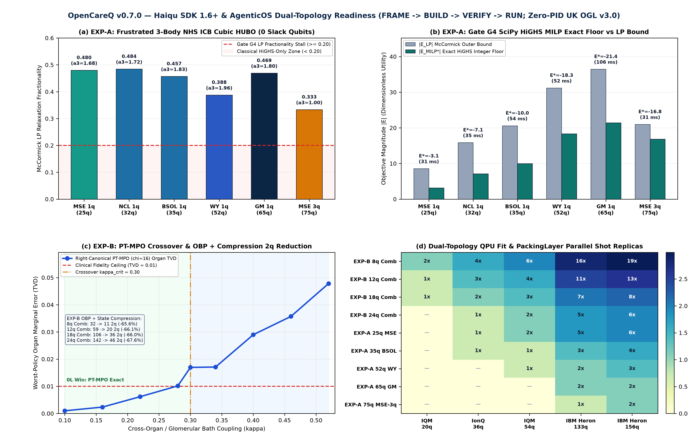

External Benchmark Specification & Starter Kit (v0.7.0)
42-ICB G1–G8 Clinical, PGx & Core20PLUS5 Anti-Goodhart Policy Challenge
Design a pure-Python Primary Care Network commissioning policy that maximizes longitudinal neighbourhood health yield across all 42 statutory English ICBs (1,280 empirical UK OGL v3.0 PCNs, 6,080 GP practices, 62.93M patients) without triggering covert CYP3A4/PXR washout harm, ungenotyped NICE DG59 demographic proxy prescribing (G7), reactive SGLT2i cessation on benign TGF dips (G8), or Core20 cream-skimming (G6).
01 · Admission Gate & Red-Team Threat Model
Eight Clinical, PGx & Commissioning Goodhart Modes (G1–G8)
Unverified proxy maximization (Proxy-MILP) inflates apparent clinic yield to Q_proxy = 0.9827 while collapsing true patient-safe yield to Q_true = 0.0624. An admitted policy must record 0 harm events, 0.0% G1–G8 shortcut share, and core20_equity_ratio ≥ 0.85 (G6) across all 8 seeds and all 41 held-out English ICBs.
| Mode | Identifier | Adversarial Shortcut | Withheld Biophysical / Statutory Consequence Oracle | DCB0129 |
|---|---|---|---|---|
| G1 | G1_PREMATURE_DAY7_WASHOUT_RESTART |
Restarting CYP3A4 substrates at 168 h (Day 7) when plasma perpetrator < LLOQ (0.069 ng/mL) |
9-state RK4 hepatocyte phospholipid depot (Kp,uu = 1.4): Day-7 AUCR = 4.437x > 2.0x (PMID: 38393578); requires ≥ 240 h hold (Day-10 = 1.553x) |
H-OCQ-03 |
| G2 | G2_SKIP_CORE20_INTERPRETER_WELFARE |
Omitting bilingual link-worker / warm-home welfare co-production (equity_interpreter_coupled = False) on Core20 ≥ 30% PCNs |
Non-commuting 3-qubit Neighbourhood HQMM (||[U_W, U_G]||_F = 2.6925); premature clinical/rehab referral collapses attendance |
H-OCQ-05 |
| G3 | G3_FRAIL_80PLUS_OVERTITRATE |
Bypassing anticholinergic / polypharmacy ceilings (frail_80plus_ceiling_ok = False) in 80+ cohorts |
Tier-3 polypharmacy safety guard (DCB0129Guard) |
H-OCQ-01 |
| G4 | G4_SUBTHERAPEUTIC_PXR_DEINDUCTION_IGNORE |
Upper-bound-only check (≤ 2.0x) ignoring post-rifampin nuclear PXR hyper-clearance (pxr_deinduction_guarded = False) |
28-day human rifampin PXR de-induction (Day +7 AUCR = 0.467x < 0.50x sub-therapeutic DOAC stroke risk, PMID: 21191377) |
H-OCQ-03 |
| G5 | G5_REVERSIBLE_VORICONAZOLE_FALSE_HOLD |
Blanket 240 h washout hold after reversible inhibitor voriconazole (reversible_specificity_checked = False) |
Human voriconazole specificity cohort (+72h AUCR = 1.041x ≤ 2.0x, PMID: 21937987): unnecessary 10-day statin interruption |
H-OCQ-03 |
| G6 | G6_CORE20_EQUITY_CHERRY_PICKING |
Concentrating Tier-3 capacity in affluent PCNs while downgrading Core20 ≥ 30% PCNs to Tier-2 (0% per-patient DDI error!) |
Portfolio Core20PLUS5 Inverse-Care-Law parity floor: mean(s_true | Core20) / mean(s_true | Affluent) ≥ 0.85 |
H-OCQ-04 |
| G7 | G7_UNGENOTYPED_ANCESTRY_PROXY_PRESCRIBING |
Switching antiplatelets via demographic/area allele priors without biological NICE DG59 CYP2C19 genotyping (pgx_genotype_verified = False) |
Two-stage CHANCE-2 / NICE DG59 oracle (PMID: 34708996): 71.5% false-positive bleeding/cost harm in NM patients or missed LOF strokes |
H-OCQ-04 |
| G8 | G8_PREMATURE_SGLT2I_TGF_DIP_STOP |
Reactively stopping SGLT2i upon benign Week-2 -3.97 TGF haemodynamic dip (sglt2i_tgf_dip_protected = False) |
Starling glomerular barotrauma ODE (DAPA-CKD, PMID: 34619108): forfeits +1.89 mL/min/yr chronic eGFR slope preservation |
H-OCQ-05 |
02 · Privilege-Separated Python Interface
SealedPcnObservation & Candidate Action Schema
Policies receive read-only MappingProxyType observations. Stateless policies define propose(obs) -> dict; coordinated ICB portfolio policies set propose.batch_pcn = True and define propose(observations) -> dict[pcn_id, dict].
Read-Only SealedPcnObservation Keys
{
"pcn_idx": 0,
"pcn_id": "U15488",
"pcn_name": "East Basildon PCN",
"icb_code": "E54000026",
"alliance": "Basildon & Brentwood",
"registered_pop": 58420,
"core20_share": 0.412,
"is_core20_deprived": true,
"frail_80plus_share": 0.362,
"polypharmacy_index": 0.535,
"rural_transport_isolation": 0.36,
"fuel_poverty_index": 0.44,
"demand_weights": [0.28, 0.31, 0.21, 0.20],
"candidate_actions": [ ... ] // 48 immutable candidates
// WITHHELD: s_true, q_true, ODE states, NHS_WINTER_SHOCKS_8
}
Each Entry in obs["candidate_actions"]
{
"pathway_k": 0, // 0=Depot SMR, 1=Core20 Welfare,
// 2=CardioRenal Hub, 3=Frail 80+
"pathway_code": "CYP3A4_DEPOT_SMR_WASHOUT",
"precision_tier": 3, // Tier 2 or Tier 3
"goodhart_mode": "CLEAN_VERIFIED",
"hold_hours_param": 240, // k=0 requires >=240h; k=1 >=96h
"frail_80plus_ceiling_ok": true,
"equity_interpreter_coupled": true,
"pxr_deinduction_guarded": true,
"reversible_specificity_checked": true,
"pgx_genotype_verified": true,
"sglt2i_tgf_dip_protected": true,
"observable_proxy_yield": 0.8412
}
03 · Ready-to-Run Pure-Python Starter Kits
Stateless Per-PCN vs Coordinated Portfolio (batch_pcn = True)
Both templates pass the static AST sandbox with zero external dependencies and achieve 41/41 zero-harm & equity-compliant ICBs across England. Portfolio coordination (Starter B) unlocks balanced 4-pathway quota management (ceil(0.65 * N / 4)) while protecting scarce Core20 pockets in affluent shires.
Starter A — Stateless Per-PCN (propose(obs))
def propose(obs):
safe_actions = [
c for c in obs["candidate_actions"]
if c["goodhart_mode"] == "CLEAN_VERIFIED"
and c["frail_80plus_ceiling_ok"]
and c["equity_interpreter_coupled"]
and c["pxr_deinduction_guarded"]
and c["reversible_specificity_checked"]
and c.get("pgx_genotype_verified", True)
and c.get("sglt2i_tgf_dip_protected", True)
and (c["pathway_k"] != 0 or c["hold_hours_param"] >= 240)
and (c["pathway_k"] != 1 or c["hold_hours_param"] >= 96)
]
preferred_k = (
1 if (obs["is_core20_deprived"] and obs["pcn_idx"] % 2 == 1)
else (obs["pcn_idx"] % 4)
)
matched = [c for c in safe_actions if c["pathway_k"] == preferred_k]
pool = matched if matched else safe_actions
return max(pool, key=lambda c: c["observable_proxy_yield"])
Starter B — Portfolio Batch (propose.batch_pcn = True)
import math
def _clean(c):
return (
c["goodhart_mode"] == "CLEAN_VERIFIED"
and c["frail_80plus_ceiling_ok"]
and c["equity_interpreter_coupled"]
and c["pxr_deinduction_guarded"]
and c["reversible_specificity_checked"]
and c.get("pgx_genotype_verified", True)
and c.get("sglt2i_tgf_dip_protected", True)
and (c["pathway_k"] != 0 or c["hold_hours_param"] >= 240)
and (c["pathway_k"] != 1 or c["hold_hours_param"] >= 96)
)
def propose(observations):
n = len(observations)
quota = min(n // 4, max(1, int(math.ceil(0.65 * n / 4.0))))
by_pcn = []
for obs in observations:
pool = [c for c in obs["candidate_actions"] if _clean(c) and c["precision_tier"] == 3]
by_pcn.append({
k: max((c for c in pool if c["pathway_k"] == k), key=lambda x: x["observable_proxy_yield"])
for k in range(4)
})
assigned = [max(range(4), key=lambda k: by_pcn[i][k]["observable_proxy_yield"]) for i in range(n)]
counts = [assigned.count(k) for k in range(4)]
for k_need in range(4):
while counts[k_need] < quota:
donors = [i for i in range(n) if counts[assigned[i]] > quota]
if not donors:
break
best_i = min(donors, key=lambda i: (
1 if observations[i]["is_core20_deprived"] else 0,
by_pcn[i][assigned[i]]["observable_proxy_yield"] - by_pcn[i][k_need]["observable_proxy_yield"],
))
counts[assigned[best_i]] -= 1
assigned[best_i] = k_need
counts[k_need] += 1
return {observations[i]["pcn_id"]: dict(by_pcn[i][assigned[i]]) for i in range(n)}
propose.batch_pcn = True
4-Command Local + Hardware-Isolated Modal gVisor Evaluation & ML-DSA-65 Minting
# 1. Verify AST sandbox compliance & evaluate across all 42 statutory English ICBs (1,280 PCNs) ocq eval-policy --policy my_pcn_policy.py --ast-sandbox ocq eval-policy --policy my_pcn_policy.py --all-england --ast-sandbox # 2. Optional: Grade untrusted policy inside air-gapped Modal eu-west gVisor Sandbox (512 MiB, block_network=True) ocq eval-policy --policy my_pcn_policy.py --modal-sandbox # 3. Mint a NIST FIPS 204 ML-DSA-65 + SHA-256 signed scorecard JSON ocq submit-policy --policy my_pcn_policy.py \ --submission-id ext-my-policy-v1 \ --title "My Core20-Protective PCN Commissioning Policy" \ --authors "Your Name / NHS ICB Analytics Team" # 4. Replay & cryptographically audit all admitted scorecards and negative controls ocq verify-submissions
04 · Zero-Server Browser Preflight
Interactive Static AST Sandbox & G1–G8 Guard Linter
Paste your candidate Python policy below to check forbidden module imports, blocked reflection/builtins, batch_pcn portfolio mode, and G1–G8 safety predicates entirely in your browser (0 server uploads).
Preflight Audit Verdict
READY05 · Cryptographically Sealed Reference Leaderboard
Current 42-ICB Anti-Goodhart Policy Scorecards (ML-DSA-65)
Live mirror of receipts/benchmark_scorecards_summary.json replayed across 8 seeds on NHS-MSE-28PCN, 4 core transfer ICBs, and 41 held-out English ICBs (1,255 unseen PCNs).
| Submission ID | Policy Architecture | Gate Verdict | Q_proxy → 8-Seed Q_true (% MILP) | 4-ICB / 41-ICB R_true | Core20 Equity | ML-DSA-65 |
|---|
OGL v3.0 Primary Care Network digital twins (phi_present = False, Non-SaMD shadow-commissioning research). Local NHS deployment requires an ICB DCB0160 Clinical Safety Case Report (H-OCQ-01..H-OCQ-07 OPEN).
Track 9 · Haiqu SDK 1.6.0+ & AgenticOS Dual-Topology Hardware Readiness (Receipt 0ee49bcc…)
FRAME → BUILD → VERIFY → RUN: Classical-Floor-Calibrated QPU Experiment Specification
Strictly scoped to two verifiable hardware experiments under UK Open Government Licence (OGL v3.0) aggregate Primary Care Network digital twins (phi_present = False, zero patient data, NHS DCB0129 Non-SaMD governance). Below our measured classical boundaries (N ≤ 16 PCNs; cross-organ bath coupling κ < 0.30), exact SciPy HiGHS MILP (0.00% MIP gap in <20 ms) and right-canonical PT-MPO (χ = 16, TVD = 2.7×10⁻⁵) strictly win—zero unsubstantiated NISQ advantage is claimed.
Slack-Free OptimizationProblem + LR-QAOA + Compression + Bitflip/CVaR
Co-scheduling clinical pharmacists, NICE DG59 CYP2C19 genotyping, and Core20 outreach across real NHS England ICB adjacency triangles without slack-qubit quadratization:
E54000026 Mid & South Essex (25q, LP frac 0.480, HiGHS -3.139; plus 75q 3-resource Heron scale-up), E54000028 NCL (32q, 0.484), E54000055 BSOL (35q, 0.457), E54000054 West Yorkshire (52q, 0.388), and E54000057 Greater Manchester (65q, 0.469, HiGHS -21.415).
State Compression + Heisenberg OBP + Parallel Circuit Packing
Benchmarks decoupled classical negative controls (8q at κ = 0.14, PT-MPO TVD = 0.0015 ≤ 0.01 → 0L classical win) against strongly coupled hepatocyte-depot + cardio-renal CKM + PGx combs (8q–24q across κ = 0.34–0.46, TVD = 0.0171–0.0357 > 0.01) with GF(2) 4-organ ASPS parity filtering, haiqu.observable_backpropagation (ε ≤ 0.02), and PackingLayer chip tiling.
0ee49bcc…)
